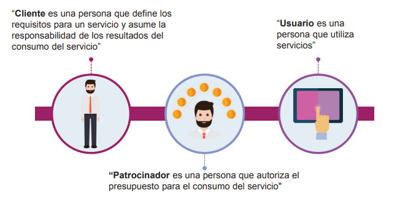

Cliente, Usuario y Patrocinador
Los consumidores de servicio
Al recibir servicios, una organización asume el rol de consumidor del servicio
Roles de los consumidores
El consumidor de servicios es un rol genérico; en la práctica, el
consumo de servicios incluye roles más específicos: cliente, usuario y
patrocinador.
Organizaciones, proveedores de servicios, consumidores de servicios
y otras partes interesadas.
- Cliente: es una persona que define los requisitos para un servicio y asume la responsabilidad de los resultados del consumo del servicio”
- Usuarios: es una persona que utiliza servicios
- Patrocinador: es una persona que autoriza el presupuesto para el consumo del servicio
Consumidores de servicios
El consumidor de servicios es un rol genérico que se utiliza para simplificar la relación entre el proveedor de servicios y el consumidor de servicios en una relación de servicios. En la práctica, el consumo del servicio implica roles más específicos, como clientes, usuarios y patrocinadores. Cada uno de estos roles puede tener diferentes definiciones de valor y, a veces, incluso expectativas contradictorias de los servicios.
Por ejemplo, el Gerente de Desarrollo en un departamento
de desarrollo de capacitación puede comunicarse regularmente
con los clientes para comprender las necesidades de un producto
de capacitación. En otros casos, los consumidores comunican
sus expectativas claramente, como cuando se ofrecen servicios
estandarizados a un amplio grupo de consumidores
Mejora de la experiencia del cliente
El éxito de cualquier producto o servicio depende de la experiencia de los consumidores o clientes con el servicio y los proveedores. La experiencia se conoce generalmente como experiencia del cliente. Puede ser objetiva y subjetiva según los criterios definidos para medirla.
Impacto de la iniciativa a los usuarios
Un elemento clave de este paso es una evaluación del estado actual. La evaluación del estado actual incluye la evaluación de los servicios existentes, como la percepción del valor recibido de los usuarios, los procesos y procedimientos involucrados y / o las capacidades de las soluciones tecnológicas disponibles.

Enfoques de valor a los clientes usuarios y patrocinadores
- Conocer cómo los consumidores de servicios usan cada servicio
- Fomente un enfoque en el valor entre todo el personal
- Concéntrese en el valor durante la actividad operativa normal, así como durante las iniciativas de mejora
- Incluya el enfoque en el valor en cada paso de cualquier iniciativa de mejora
Sistema de valor a los clientes
Cada SVS de la organización se relaciona con otras organizaciones, formando un ecosistema que a su vez puede facilitar el valor para dichas organizaciones, sus clientes y otras partes interesadas.
Flujos de trabajo para clientes y usuarios
El desarrollo de una nueva aplicación para un nuevo cliente comienza con el involucramiento inicial (pre-venta), procede con la creación de prototipos, acuerdos, desarrollo y, finalmente, a la liberación y el soporte. Cambiar una aplicación existente para cumplir con los nuevos requisitos de los clientes existentes no incluye la preventa e implica el desarrollo, las pruebas y el soporte de una manera diferente.
Control de cambios , clientes usuarios y patrocinadores
| Equilibra la necesidad de realizar cambios beneficiosos que brinden valor adicional con la necesidad de proteger a los clientes y usuarios del efecto adverso de los cambios |
| Los principales entradas al SVS son la oportunidad y la demanda. Las oportunidades se refieren a opciones o posibilidades que pueden agregar valor para los clientes y partes interesadas, o ayudar a la organización a mejorar. |
La gestion de incidentes
| La gestión de incidentes puede tener un impacto masivo en la satisfacción
del cliente y del usuario, y en cómo reconocen al proveedor del servicio.
La gestión de incidentes es una práctica importante para que el proveedor
de servicios cumpla con las expectativas de los usuarios y clientes |
| Enfoque y esfuerzo para involucrarse y escuchar los requisitos, asuntos, inquietudes y necesidades diarias de los clientes. |
Practicas ITIL
| Compromiso para entender y confi rmar las necesidades y
requerimientos de los clientes. Escuchar para construir relaciones y confi anza para mostrar a los clientes que son valorados y comprendidos. |
| Proporcionar información acerca de CIs y cómo los Cis interactúan, se relacionan y dependen entre sí para crear valor para los clientes y usuarios. |